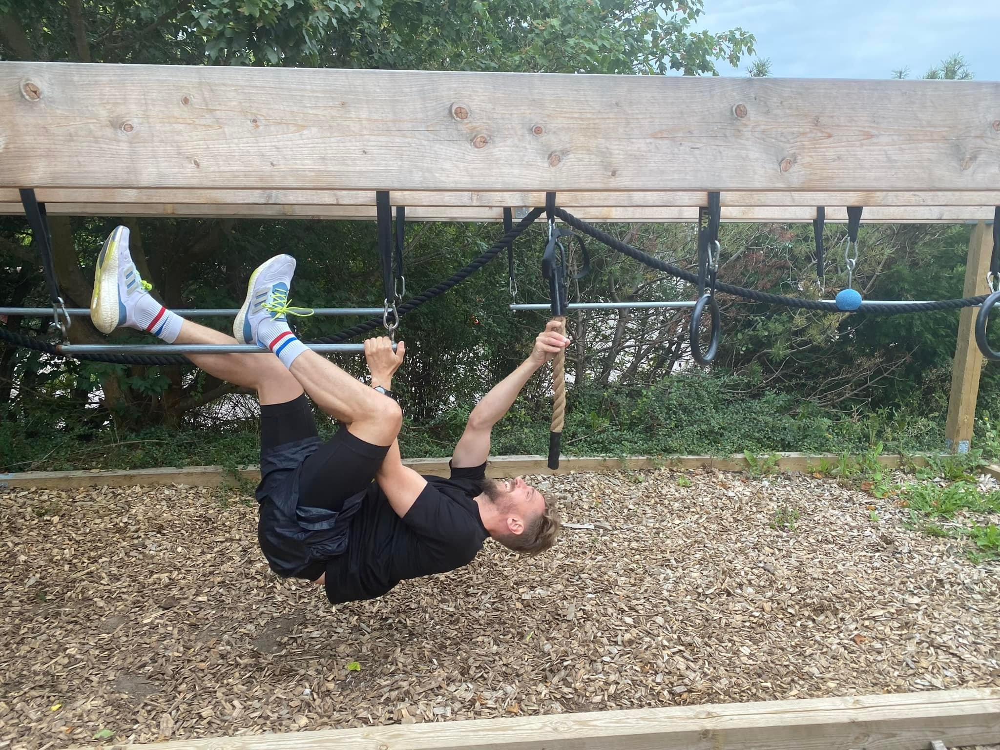

Hi, I'm an OCR runner who enjoys tackling obstacle courses at a fun level. My journey started on a cold January day in 2023 in Dragør, where I tried OCR for the first time. Since then, I’ve had an amazing time training with Battlefield OCR and WOW-fit.dk. I’ve completed Nordic Race Beach twice – once in 2023 and again in 2024 – and also had the pleasure of participating in the Reborn Family Run with my 10-year-old daughter. It’s been wonderful experiencing this activity with her!
Most recently, I ran the Nordic Race Urban, which was a fun challenge where I learned to adapt to different obstacles and work with other participants. Although I used to practice CrossFit, I’m now focused on OCR, where I’ve gradually learned to master most obstacles. I still need a little help here and there, but that's what makes it exciting.
Every Saturday, I train with my two boys, aged 7, and my 10-year-old daughter. We’re part of a team focused on making OCR fun for kids, giving them the chance to build skills and confidence in a playful environment. It’s a fantastic way for us to spend time together and inspire them to stay active.
Besides the races themselves, I’ve found incredible support in the OCR community. It’s inspiring to see how people from different backgrounds and skill levels come together to share experiences and encouragement. I don’t participate at an elite level – there are many in Denmark far better than me – but I find great joy in pushing myself and having fun along the way.
When I’m not training or racing, you can often find me in nature, enjoying exploring new trails or spending time with my family. I’m also passionate about a healthy lifestyle, striving to eat well and stay active. If you'd like to hear more about my experiences, training tips, or maybe join me on an OCR adventure, feel free to reach out!
